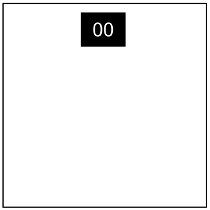
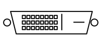

Keep Talking and Nobody Explodes v. 1
Introduction
Bienvenue dans le monde dangereux et intransigeant du déminage.
Étudiez ce manuel attentivement; vous êtes l'expert. Dans ces pages vous
trouverez tout ce que vous avez besoin de savoir pour désamorcer les bombes les plus traîtres.
Et rappelez-vous — la moindre petite erreur peut tout faire exploser !
Keep Talking and Nobody Explodes v. 1
Defusing Bombs
Defusing Bombs
A bomb will explode when its countdown timer reaches 0:00 or when too many strikes have been recorded. The only way to defuse a bomb is to disarm all of its modules before its countdown timer expires.
Example Bomb
Front | Side |
Modules
Each bomb will include up to 11 modules that must be disarmed. Each module is discrete and can be disarmed in any order.
Instructions for disarming modules can be found in Section 1. "Needy" modules present a special case and are described in Section 2.
Strikes
Strike Indicator

When the Defuser makes a mistake, the bomb will record a strike which will be displayed on the indicator above the countdown timer. Bombs with a strike indicator will explode upon the third strike. The timer will begin to count down faster after a strike has been recorded.
If no strike indicator is present above the countdown timer, the bomb will explode upon the first strike, leaving no room for error.
Gathering Information
Some disarming instructions will require specific information about the bomb, such as the serial number. This type of information can typically be found on the top, bottom, or sides of the bomb casing. See Appendix A, B, and C for identification instructions that will be useful in disarming certain modules.
Keep Talking and Nobody Explodes v. 1
Section 1: Modules
Section 1: Modules
Modules can be identified by an LED in the top right corner. When this LED is lit green, the module has been disarmed.
All modules must be disarmed to defuse the bomb.
Keep Talking and Nobody Explodes v. 1
Wires
On the Subject of Wires
Wires are the lifeblood of electronics! Wait, no, electricity is the lifeblood. Wires are more like the arteries. The veins? No matter…
- A wire module can have 3-6 wires on it.
- Only the one correct wire needs to be cut to disarm the module.
- Wire ordering begins with the first on the top.
| 3 fils:
S'il n'y a pas de fil rouge, coupez le deuxième fil. Sinon, si le dernier fil est blanc, coupez le dernier fil. Sinon, s'il y a plus d'un fil bleu, coupez le dernier fil bleu. Sinon, coupez le dernier fil. |
| 4 fils:
S'il y a plus d'un fil rouge et si le dernier chiffre du numéro de série est impair, coupez le dernier fil rouge. Sinon, si le dernier fil est jaune et qu'il n'y a pas de fil rouge, coupez le premier fil. Sinon, s'il y a exactement un fil bleu, coupez le premier fil. Sinon, s'il y a plus d'un fil jaune, coupez le dernier fil. Sinon, coupez le deuxième fil. |
| 5 fils:
Si le dernier fil est noir et que le dernier chiffre du numéro de série est impair, coupez le quatrième fil. Sinon, s'il y a exactement un fil rouge et s'il y a plus d'un fil jaune, coupez le premier fil. Sinon, s'il n'y a pas de fil noir, coupez le second fil. Sinon, coupez le premier fil. |
| 6 fils:
S'il n'y a pas de fil jaune et si le dernier chiffre du numéro de série est impair, coupez le troisième fil. Sinon, s'il y a exactement un fil jaune et s'il y a plus d'un fil blanc, coupez le quatrième fil. Sinon, s'il n'y a pas de fil rouge, coupez le dernier fil. Sinon, coupez le quatrième fil. |
Keep Talking and Nobody Explodes v. 1
The Button
On the Subject of The Button
You might think that a button telling you to press it is pretty straightforward. That’s the kind of thinking that gets people exploded.
See Appendix A for indicator identification reference.
See Appendix B for battery identification reference.
Follow these rules in the order they are listed. Perform the first action that applies:
- Si le bouton est bleu et est marqué "Abort", maintenez-le.
- S'il y a plus d'une pile sur la bombe et que le bouton est marqué "Detonate", appuyez et relâchez immédiatement le bouton.
- Si le bouton est blanc et s'il y a un indicateur allumé avec la mention CAR, appuyez et maintenez-le.
- S'il y a plus de 2 piles sur la bombe et s'il y a un indicateur allumé avec la mention FRK, appuyez et relâchez immédiatement le bouton.
- Si le bouton est jaune, appuyez et maintenez-le.
- Si le bouton est rouge et est marqué "Hold", appuyez et relâchez immédiatement le bouton.
- Si aucun des cas ci-dessus ne convient, maintenez-le.
Relâcher un Bouton Enfoncé
If you start holding the button down, a colored strip will light up on the right side of the module. Based on its color, you must release the button at a specific point in time:
- Bande Bleue : 4
- Bande Blanche : 1
- Bande Jaune : 5
- Bande d'une autre couleur : 1
Keep Talking and Nobody Explodes v. 1
Keypads
On the Subject of Keypads
I'm not sure what these symbols are, but I suspect they have something to do with occult.
- Only one column below has all four of the symbols from the keypad.
- Press the four buttons in the order their symbols appear from top to bottom within that column.
 |  |  | ||||||||
|  |  | | |||||||
 |  |  |  | | ||||||
|  |  | ||||||||
|  | | | | ||||||
 | | |  | |||||||
| | | |
Keep Talking and Nobody Explodes v. 1
Simon Says
On the Subject of Simon Says
This is like one of those toys you played with as a kid where you have to match the pattern that appears, except this one is a knockoff that was probably purchased at a dollar store.
- One of the four colored buttons will flash.
- Using the correct table below, press the button with the corresponding color.
- The original button will flash, followed by another. Repeat this sequence in order using the color mapping.
- The sequence will lengthen by one each time you correctly enter a sequence until the module is disarmed.
Keep Talking and Nobody Explodes v. 1
Who's on First
On the Subject of Who’s on First
This contraption is like something out of a sketch comedy routine, which might be funny if it wasn't connected to a bomb. I’ll keep this brief, as words only complicate matters.
- Read the display and use step 1 to determine which button label to read.
- Using this button label, use step 2 determine which button to push.
- Repeat until the module has been disarmed.
Step 1:
Based on the display, read the label of a particular button and proceed to step 2:
|
|
|
|
|
| ||||||||||||||||||||||||||||||||||||||||||||||||
|
|
|
|
| |||||||||||||||||||||||||||||||||||||||||||||||||
|
|
|
|
|
| ||||||||||||||||||||||||||||||||||||||||||||||||
|
|
|
|
|
| ||||||||||||||||||||||||||||||||||||||||||||||||
|
|
|
| ||||||||||||||||||||||||||||||||||||||||||||||||||
Keep Talking and Nobody Explodes v. 1
Who's on First
Step 2:
Using the label from step 1, push the first button that appears in its corresponding list:
| "READY": | YES, OKAY, WHAT, MIDDLE, LEFT, PRESS, RIGHT, BLANK, READY, NO, FIRST, UHHH, NOTHING, WAIT |
|---|---|
| "FIRST": | LEFT, OKAY, YES, MIDDLE, NO, RIGHT, NOTHING, UHHH, WAIT, READY, BLANK, WHAT, PRESS, FIRST |
| "NO": | BLANK, UHHH, WAIT, FIRST, WHAT, READY, RIGHT, YES, NOTHING, LEFT, PRESS, OKAY, NO, MIDDLE |
| "BLANK": | WAIT, RIGHT, OKAY, MIDDLE, BLANK, PRESS, READY, NOTHING, NO, WHAT, LEFT, UHHH, YES, FIRST |
| "NOTHING": | UHHH, RIGHT, OKAY, MIDDLE, YES, BLANK, NO, PRESS, LEFT, WHAT, WAIT, FIRST, NOTHING, READY |
| "YES": | OKAY, RIGHT, UHHH, MIDDLE, FIRST, WHAT, PRESS, READY, NOTHING, YES, LEFT, BLANK, NO, WAIT |
| "WHAT": | UHHH, WHAT, LEFT, NOTHING, READY, BLANK, MIDDLE, NO, OKAY, FIRST, WAIT, YES, PRESS, RIGHT |
| "UHHH": | READY, NOTHING, LEFT, WHAT, OKAY, YES, RIGHT, NO, PRESS, BLANK, UHHH, MIDDLE, WAIT, FIRST |
| "LEFT": | RIGHT, LEFT, FIRST, NO, MIDDLE, YES, BLANK, WHAT, UHHH, WAIT, PRESS, READY, OKAY, NOTHING |
| "RIGHT": | YES, NOTHING, READY, PRESS, NO, WAIT, WHAT, RIGHT, MIDDLE, LEFT, UHHH, BLANK, OKAY, FIRST |
| "MIDDLE": | BLANK, READY, OKAY, WHAT, NOTHING, PRESS, NO, WAIT, LEFT, MIDDLE, RIGHT, FIRST, UHHH, YES |
| "OKAY": | MIDDLE, NO, FIRST, YES, UHHH, NOTHING, WAIT, OKAY, LEFT, READY, BLANK, PRESS, WHAT, RIGHT |
| "WAIT": | UHHH, NO, BLANK, OKAY, YES, LEFT, FIRST, PRESS, WHAT, WAIT, NOTHING, READY, RIGHT, MIDDLE |
| "PRESS": | RIGHT, MIDDLE, YES, READY, PRESS, OKAY, NOTHING, UHHH, BLANK, LEFT, FIRST, WHAT, NO, WAIT |
| "YOU": | SURE, YOU ARE, YOUR, YOU'RE, NEXT, UH HUH, UR, HOLD, WHAT?, YOU, UH UH, LIKE, DONE, U |
| "YOU ARE": | YOUR, NEXT, LIKE, UH HUH, WHAT?, DONE, UH UH, HOLD, YOU, U, YOU'RE, SURE, UR, YOU ARE |
| "YOUR": | UH UH, YOU ARE, UH HUH, YOUR, NEXT, UR, SURE, U, YOU'RE, YOU, WHAT?, HOLD, LIKE, DONE |
| "YOU'RE": | YOU, YOU'RE, UR, NEXT, UH UH, YOU ARE, U, YOUR, WHAT?, UH HUH, SURE, DONE, LIKE, HOLD |
| "UR": | DONE, U, UR, UH HUH, WHAT?, SURE, YOUR, HOLD, YOU'RE, LIKE, NEXT, UH UH, YOU ARE, YOU |
| "U": | UH HUH, SURE, NEXT, WHAT?, YOU'RE, UR, UH UH, DONE, U, YOU, LIKE, HOLD, YOU ARE, YOUR |
| "UH HUH": | UH HUH, YOUR, YOU ARE, YOU, DONE, HOLD, UH UH, NEXT, SURE, LIKE, YOU'RE, UR, U, WHAT? |
| "UH UH": | UR, U, YOU ARE, YOU'RE, NEXT, UH UH, DONE, YOU, UH HUH, LIKE, YOUR, SURE, HOLD, WHAT? |
| "WHAT?": | YOU, HOLD, YOU'RE, YOUR, U, DONE, UH UH, LIKE, YOU ARE, UH HUH, UR, NEXT, WHAT?, SURE |
| "DONE": | SURE, UH HUH, NEXT, WHAT?, YOUR, UR, YOU'RE, HOLD, LIKE, YOU, U, YOU ARE, UH UH, DONE |
| "NEXT": | WHAT?, UH HUH, UH UH, YOUR, HOLD, SURE, NEXT, LIKE, DONE, YOU ARE, UR, YOU'RE, U, YOU |
| "HOLD": | YOU ARE, U, DONE, UH UH, YOU, UR, SURE, WHAT?, YOU'RE, NEXT, HOLD, UH HUH, YOUR, LIKE |
| "SURE": | YOU ARE, DONE, LIKE, YOU'RE, YOU, HOLD, UH HUH, UR, SURE, U, WHAT?, NEXT, YOUR, UH UH |
| "LIKE": | YOU'RE, NEXT, U, UR, HOLD, DONE, UH UH, WHAT?, UH HUH, YOU, LIKE, SURE, YOU ARE, YOUR |
Keep Talking and Nobody Explodes v. 1
Memory
On the Subject of Memory
Memory is a fragile thing but so is everything else when a bomb goes off, so pay attention!
- Press the correct button to progress the module to the next stage. Complete all stages to disarm the module.
- Pressing an incorrect button will reset the module back to stage 1.
- Button positions are ordered from left to right.
Stage 1:
1: Position 2
2: Position 2
3: Position 3
4: Position 4
Stage 2:
1: Number 4
2: Same position as Stage 1
3: Position 1
4: Same position as Stage 1
Stage 3:
1: Same number as Stage 2
2: Same number as Stage 1
3: Position 3
4: Number 4
Stage 4:
1: Same position as Stage 1
2: Position 1
3: Same position as Stage 2
4: Same position as Stage 2
Stage 5:
1: Same number as Stage 1
2: Same number as Stage 2
3: Same number as Stage 4
4: Same number as Stage 3
Keep Talking and Nobody Explodes v. 1
Morse Code
On the Subject of Morse Code
An antiquated form of naval communication? What next? At least it's genuine Morse Code, so pay attention and you might just learn something.
- Interpret the signal from the flashing light using the Morse Code chart to spell one of the words in the table.
- The signal will loop, with a long gap between repetitions.
- Once the word is identified, set the corresponding frequency and press the transmit (TX) button.
| How to Interpret |
|---|
|
1. A short flash represents a dot. 2. A long flash represents a dah. 3. There is a long gap between letters. 4. There is a very long gap before the word repeats. |
| If the word is: | Respond at frequency: |
|---|---|
| beats | 3.600 MHz |
| bistro | 3.552 MHz |
| bombs | 3.565 MHz |
| boxes | 3.535 MHz |
| break | 3.572 MHz |
| brick | 3.575 MHz |
| flick | 3.555 MHz |
| halls | 3.515 MHz |
| leaks | 3.542 MHz |
| shell | 3.505 MHz |
| slick | 3.522 MHz |
| steak | 3.582 MHz |
| sting | 3.592 MHz |
| strobe | 3.545 MHz |
| trick | 3.532 MHz |
| vector | 3.595 MHz |
Keep Talking and Nobody Explodes v. 1
Complicated Wires
On the Subject of Complicated Wires
These wires aren't like the others. Some have stripes! That makes them completely different. The good news is that we've found a concise set of instructions on what to do about it! Maybe too concise...
- Look at each wire: there is an LED above the wire and a space for a "★" symbol below the wire.
- For each wire/LED/symbol combination, use the Venn diagram below to decide whether or not to cut the wire.
- Each wire may be striped with multiple colors.
Si le fil a du bleu, add B
Si le fil a du rouge, add R
Si le fil a une étoile, add S
Si le fil a un LED allumée, add L
Fil Blanc: YUP
B - SN last pair
BR - SN last pair
BS - NOPE
BL - Port Parallèle
BRS - Port Parallèle
BRL - SN last pair
BSL - Port Parallèle
BRSL - NOPE
R - SN last pair
RS - YUP
RL - Piles 2+
RSL - Piles 2+
S - YUP
SL - Piles 2+
L - NOPE
Si le fil a du rouge, add R
Si le fil a une étoile, add S
Si le fil a un LED allumée, add L
Fil Blanc: YUP
B - SN last pair
BR - SN last pair
BS - NOPE
BL - Port Parallèle
BRS - Port Parallèle
BRL - SN last pair
BSL - Port Parallèle
BRSL - NOPE
R - SN last pair
RS - YUP
RL - Piles 2+
RSL - Piles 2+
S - YUP
SL - Piles 2+
L - NOPE
Keep Talking and Nobody Explodes v. 1
Wire Sequences
On the Subject of Wire Sequences
It's hard to say how this mechanism works. The engineering is pretty impressive, but there must have been an easier way to manage nine wires.
- Within this module there are several panels with wires on them, but only one panel is visible at a time. Switch to the next panel by using the down button and the previous panel by using the up button.
- Do not switch to the next panel until you are sure that you have cut all necessary wires on the current panel.
- Cut the wires as directed by the following table. Wire occurrences are cumulative over all panels within the module.
| Red Wire Occurrences | |
|---|---|
| Wire Occurrence | Cut if connected to: |
| First red occurrence | C |
| Second red occurrence | B |
| Third red occurrence | A |
| Fourth red occurrence | A or C |
| Fifth red occurrence | B |
| Sixth red occurrence | A or C |
| Seventh red occurrence | A, B or C |
| Eighth red occurrence | A or B |
| Ninth red occurrence | B |
| Blue Wire Occurrences | |
|---|---|
| Wire Occurrence | Cut if connected to: |
| First blue occurrence | B |
| Second blue occurrence | A or C |
| Third blue occurrence | B |
| Fourth blue occurrence | A |
| Fifth blue occurrence | B |
| Sixth blue occurrence | B or C |
| Seventh blue occurrence | C |
| Eighth blue occurrence | A or C |
| Ninth blue occurrence | A |
| Black Wire Occurrences | |
|---|---|
| Wire Occurrence | Cut if connected to: |
| First black occurrence | A, B or C |
| Second black occurrence | A or C |
| Third black occurrence | B |
| Fourth black occurrence | A or C |
| Fifth black occurrence | B |
| Sixth black occurrence | B or C |
| Seventh black occurrence | A or B |
| Eighth black occurrence | C |
| Ninth black occurrence | C |
Keep Talking and Nobody Explodes v. 1
Mazes
On the Subject of Mazes
This seems to be some kind of maze, probably stolen off of a restaurant placemat.
- Find the maze with matching circular markings.
- The defuser must navigate the white light to the red triangle using the arrow buttons.
- Warning: Do not cross the lines shown in the maze. These lines are invisible on the bomb.
Keep Talking and Nobody Explodes v. 1
Passwords
On the Subject of Passwords
Fortunately this password doesn't seem to meet standard government security requirements: 22 characters, mixed case, numbers in random order without any palindromes above length 3.
- La lettre du haut représente la 3ème lettre du mot.
- La lettre en dessous c'est la 5ème.
- Press the submit button once the correct word has been set.

Keep Talking and Nobody Explodes v. 1
Section 2: Needy Modules

Section 2: Needy Modules
Needy modules cannot be disarmed, but pose a recurrent hazard.
Needy modules can be identified as a module with a small 2‑digit timer in the top center. Interacting with the bomb may cause them to become activated. Once activated, these needy modules must be tended to regularly before their timer expires in order to prevent a strike.
Stay observant: needy modules may reactivate at any time.
Keep Talking and Nobody Explodes v. 1
Venting Gas
On the Subject of Venting Gas
Computer hacking is hard work! Well, it usually is. This job could probably be performed by a simple drinking bird pressing the same key over and over again.
- If it says "Detonate?" - Press N
If it says "Vent Gas?" - Press Y
Keep Talking and Nobody Explodes v. 1
Capacitor Discharge
On the Subject of Capacitor Discharge
I'm going to guess that this is just meant to occupy your attention, because otherwise this is some shoddy electronics work.
- Discharge the capacitor before it overloads by holding down the lever.
Keep Talking and Nobody Explodes v. 1
Knobs
On the Subject of Knobs
Needlessly complicated and endlessly needy. Imagine if such expertise were used to make something other than diabolical puzzles.
- The knob can be turned to one of four different positions.
- The knob must be in the correct position when this module's timer hits zero.
- The correct position can be determined by the on/off configuration of the twelve LEDs.
- Knob positions are relative to the "UP" label, which may have rotated.
LED Configurations
Up Position:
| X | X | X | |||
| X | X | X | X | X |
| X | X | X | |||
| X | X | X | X |
Down Position:
| X | X | X | |||
| X | X | X | X | X |
| X | X | X | |||
| X | X |
Left Position:
| X | |||||
| X | X | X | X |
| X | |||||
| X | X |
Right Position:
| X | X | X | X | X | |
| X | X | X | X |
| X | X | X | |||
| X | X | X | X |
X = Lit LED
Keep Talking and Nobody Explodes v. 1
Appendix A
Appendix A: Indicator Identification Reference
Labelled indicator lights can be found on the sides of the bomb casing.
Common Indicators
- SND
- CLR
- CAR
- IND
- FRQ
- SIG
- NSA
- MSA
- TRN
- BOB
- FRK
Keep Talking and Nobody Explodes v. 1
Appendix B
Appendix B: Battery Identification Reference
Common battery types can be found within enclosures on the sides of the bomb casing.
| Battery | Type |
|---|---|
 |
AA |
 |
D |
Keep Talking and Nobody Explodes v. 1
Appendix C
Appendix C: Port Identification Reference
Digital and analog ports can be found on sides of the bomb casing.
| Port | Name |
|---|---|
|  | DVI-D |
 |
Parallel |
 |
PS/2 |
 |
RJ-45 |
 |
Serial |
 |
Stereo RCA |